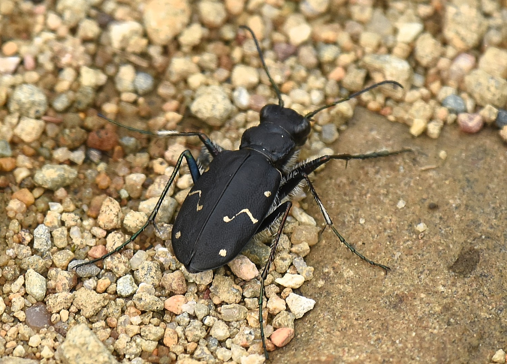
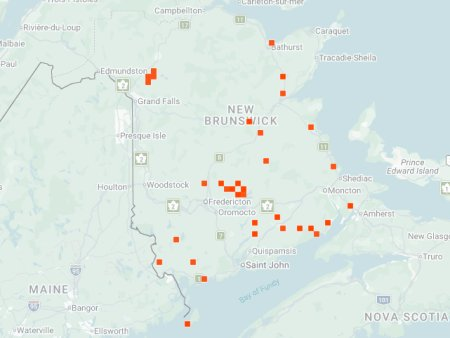

photo: Jimmy Dee, June 24, 2022

Distribution map (based on iNaturalist observations)
Identification
- Medium-large (12–16 mm), dark bronze to black with reduced or absent white maculations.
- Long labrum (lip) visible in front view; metallic green reflections on head/pronotum.
- Fast runner; often in open boreal/cooler habitats.
Habitat in New Brunswick
Prefers open, sandy or gravelly areas in boreal forest, roadsides, clearings, and disturbed sites. Tolerates cooler, northern conditions compared to many other tiger beetles.
Flight Season in NB
April 24 – September 23 (spring–fall; peaks May–July).
Distribution & Notes
Widespread in northern and central New Brunswick, especially in boreal and mixed-forest regions. One of the more commonly encountered species in cooler habitats. Often seen on dirt roads and sandy clearings.